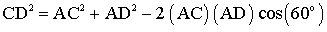
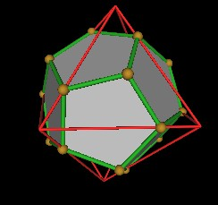

Here I give the details for building a model of the 5 intersecting Octahedra.
| Figure 1 5 Intersecting Octahedra. |
One of the reasons that this is an interesting model is because the edges of the 5 intersecting Octahedra intersect each other to define additional vertices. These additional vertices define an Icosahedron and a Dodecahedron.
| Figure 2 Icosahedron in the 5 Intersecting Octahedra matrix. |
| Figure 3 Dodecahedron in the 5 Intersecting Octahedra matrix. |
It is known that the Dodecahedron vertices also define 5 Cubes and 10 Tetrahedra.
In order to build this model, we need to divide the Octahedrons' edges into 3 segments. That is, we need to introduce 2 additional hubs along the Octahedrons' edges.
We therefore need to calculate the location of these new huds along the Octahedrons' edge length.
Consider just 1 of the Octahedra and the Icosahedron.
| Figure 4 Octahedron and Icosahedron. |
The triangular face of the Icosahedron is in the same plane as one of the Octahedron's faces. Therefore, the distance from the center of volume to the face center of both the OCtahedron and the Icosahedron are the same. From the Polyhedra Encyclopedia we have
where
Setting these equation equal to one another gives
|
Figure 5 Octahedron and Icosahedron triangle layout. |
Consider the triangle ACD. We want to know the edge length AC. We know that the edge length AD is (EL - AC) (because the Icosahedron and Octahedron triangles are both centered on the same point) and that the edge length CD is the Icosahedron edge length. We also know that the angle C.A.D is 60 degress.
We can use the Law of Cosines for the triangle ACD to calculate the length AC.

We set the edge length of the OCtahedron to be 1. Then AC will be a length factor. We get
Using
we can write
To evaluate the left hand side, we first calculate
We then get
Next we GUESS that
We put this into the right hand side of the above equation and see if it equals the left hand side.
We get
which does equal the left hand side of the above equation.
Thus we have shown that the length AC is
Next we need to calculate the location of the Dodecahedron vertex along the Octahedrons' edges.
|  |
|
Figure 6 Dodecahedron vertices along Octahedron edge. |
Note that the vertices of the Dodecahedron form another triangle in the plane of the Octahedron's face.
| Figure 7 Another triangle. |
If we put back the Icosahedron for a minute, we see that the relation between the Icosahedron triangle and the Dodecahedron formed triangle.
|
Figure 8 Dodecahedron and Icosahedron triangle in the Octahedron triangle. |
It turns out that the Dodecahedron triangle is rotated by 60° to the Icosahedron triangle. See the details here.
| Figure 9 60 Degree difference. |
I haven't found a quick way to calculate the location of the Dodecahedron vertex along the Octahedron edge using this information, so I will use a vector coordinate method instead.
Consider 2 Octahedra intersecting each other.
|
Figure 10 Octahedra and Dodecahedron with vertex labels. |
The vertex coordinates are given here .
We have (with P = Golden Ratio, and P^n = to the nth power)
| X | Y | Z | |
| V1 | 0 | 0 | 2P^2 |
| V35 | 0 | -2P^2 | 0 |
and
| X | Y | Z | |
| V7 | -P | -P^2 | P^3 |
| V10 | P^3 | P | P^2 |
|
Figure 11 Vector and Vertex labels for intersecting point "S". |
Vector A is then V35 - V1. We get
Vector B is given by V10 - V7 which is
We want to reduce the length of the vectors A and B by some factor "k" such that they end at the intersection point. This is given by the equations
Looking at just the x-coordinate, we have the equation
This is the length factor by which the Octahedron's edge length is reduced to give the location of the Dodecahedron's vertex.
| Figure 12 Length factors for intersection points |
We end up with
Length along edge to Icosahedron = (1/P)ELOCTA = 0.618033988 ELOCTA
Length along edge to Dodecahedron = P/(3P+1)ELOCTA = 0.276393202 ELOCTA
With this information, we can cut the struts of the Octahedron and insert sphere hubs.
The edge segment factors are then
| A | 2 - P | 0.381966011 |
| B | 2/(3P+1) | 0.341640786 |
| C | P/(3P+1) | 0.276393202 |
Don't forget to adjust for the radius of the hubs.
Usage Note: My work is copyrighted. You may reference and use my work in non-profit projects but you may not include my work, or parts of it, in any for-profit project without my consent.